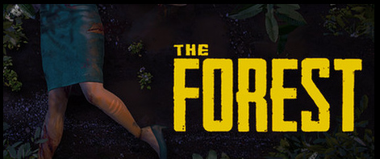

Meine Interessen:
Meine Interessen liegen bei Hockey, Schlagzeug, Videospiele. Am meisten Spiele ich, Rainbow six siege, The Forest, Minecraft, CSGO, Microsoft- Flight Simulator und Fortnite.
Vor allem aber programmiere ich sehr gerne etwas und versuche etwas kreatives daraus zu machen. Wie zum Beispiel diese Website. Eine andere sehr große Interesse war an einem Discord server mitzuhelfen, der Server heißt "Cloaksplus" und ist dafür bekannt kostenlose Minecraft Capes an jeden zu geben der Minecraft Java besitzt
"Cloaksplus"

Rainbow six:
Meiner Meinung nach ein sehr gutes Spiel, es gibt viele verschiedene Operatoren, viele verschiedene Waffen, viele verschiedene Waffenskins, Helme, Oberteile und Elite Skins die das Spiel sehr schön aussehen obwohl es ein Ego Shooter Spiel ist. Mit Freunden kann man gemeinsam lustige Spiele spielen oder auch competitive Spiele, jedoch finde ich gab es zu viele Veränderungen an den Designs, Interface, was mir am Ende nicht mehr gefallen hat.

The Forest ist ein sehr lustiges und aufregendes Spiel, am meisten macht